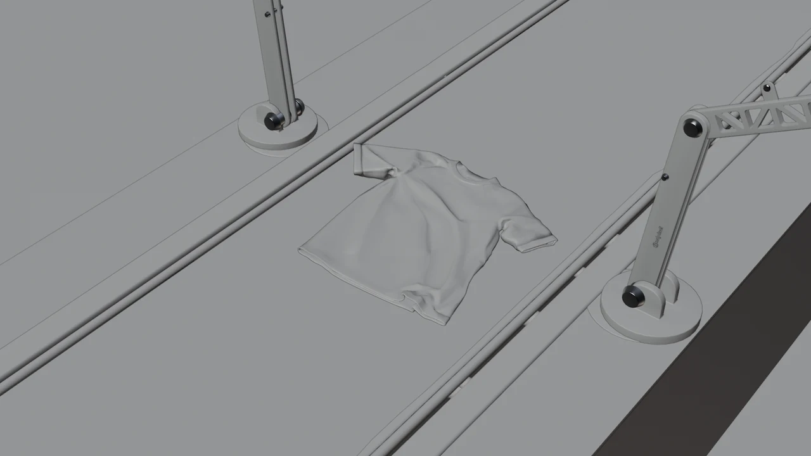

[ 02 ]
CORSARO
2026
VISUELS 3D PENSÉS POUR METTRE EN SCÈNE L’UNIVERS DE CORSARO AVEC UNE APPROCHE GRAPHIQUE, MINIMALISTE ET CINÉMATOGRAPHIQUE.
- MODÉLISATION
- ANIMATION
- RENDU
- COMPOSITING
- COLOR GRADING
LOGICIELS : BLENDER / AFTER EFFECTS

